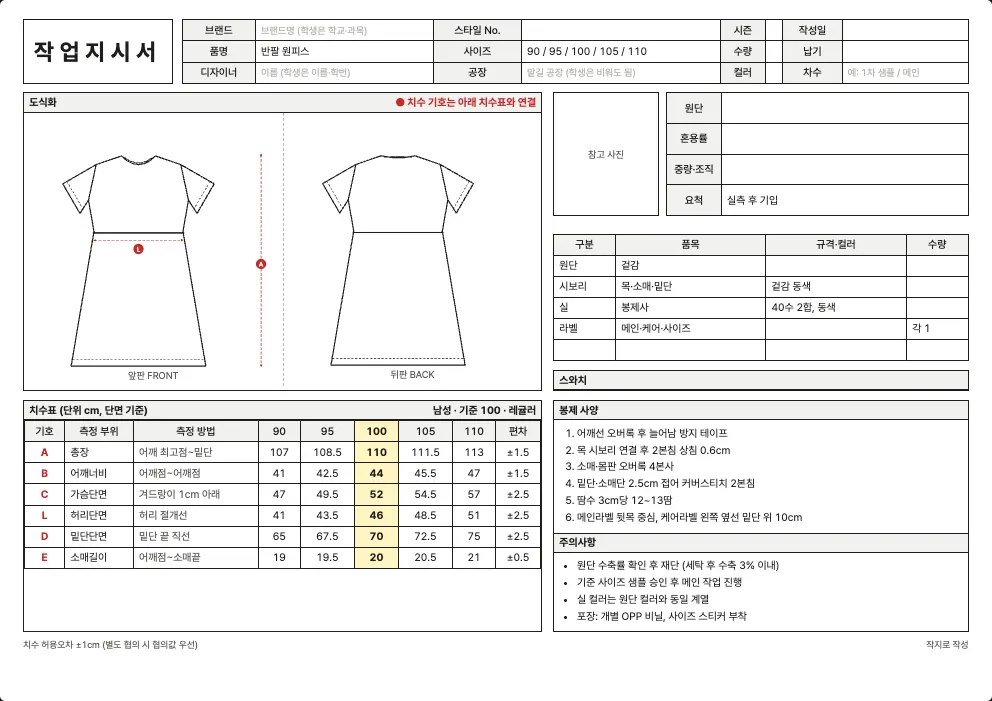

최종 수정 2026년 10월 10일 · 읽는 시간 약 4분
원피스 양식 내려받기
반팔 원피스, 민소매 원피스, 셔츠 원피스에 쓰는 엑셀 작업지시서 양식입니다. 상의 부분과 치마 부분을 함께 적어야 해서 총장·어깨너비·가슴단면·허리단면·밑단단면·소매길이를 한 표에 모았습니다.
| 사이즈 체계 | 엑셀 파일 (.xlsx) |
|---|---|
| 남성 사이즈 (80~110) | 남성 사이즈 (80~110) |
| 여성 사이즈 (44~88) | 여성 사이즈 (44~88) |
| 영문 양식 (해외 공장용) | 남성 · 영문 여성 · 영문 |

원피스 작업지시서에서 꼭 챙길 것
- 허리선 위치: 원피스는 허리 절개선이 어디에 있는지가 실루엣을 결정합니다. 허리단면과 함께 ‘어깨선에서 허리선까지’ 길이를 도식화에 표시하세요.
- 치마 부분의 퍼짐: 밑단단면이 허리단면보다 얼마나 큰지가 A라인·플레어 같은 모양을 정합니다. 주름이나 개더가 있으면 주름 양과 위치를 봉제 사양에 적습니다.
- 여밈 방식: 뒤 지퍼, 앞 단추(셔츠 원피스), 옆 지퍼 중 무엇인지, 길이와 위치를 부자재 표에 적습니다. 셔츠 원피스는 단추 개수와 간격도 필요합니다.
- 안감과 비침: 얇은 원단이면 안감 사용 여부와 안감 길이를 정하고, 흰색·밝은 색이면 비침을 샘플에서 반드시 확인합니다.
- 총장 기준점: 원피스는 총장이 길어 기준점(어깨 끝점, 목 뒤 중심 등)이 다르면 몇 cm씩 차이 납니다. 재는 위치를 치수표의 ‘측정 방법’ 칸에 적어 두세요.
치수표 (양식에 들어 있는 기준값)
이 양식의 치수표는 6곳(총장, 어깨너비, 가슴단면, 허리단면, 밑단단면, 소매길이)입니다. 기준(샘플) 사이즈는 100(남성)과 66(여성)이고, 단위는 cm이며 단면(납작하게 놓고 가로로 잰 길이) 기준입니다.
남성 사이즈 (80~110)
| 기호 | 측정 부위 | 측정 방법 | 90 | 95 | 100 | 105 | 110 | 편차 |
|---|---|---|---|---|---|---|---|---|
| A | 총장 | 어깨 최고점~밑단 | 107 | 108.5 | 110 | 111.5 | 113 | ±1.5 |
| B | 어깨너비 | 어깨점~어깨점 | 41 | 42.5 | 44 | 45.5 | 47 | ±1.5 |
| C | 가슴단면 | 겨드랑이 1cm 아래 | 47 | 49.5 | 52 | 54.5 | 57 | ±2.5 |
| L | 허리단면 | 허리 절개선 | 41 | 43.5 | 46 | 48.5 | 51 | ±2.5 |
| D | 밑단단면 | 밑단 끝 직선 | 65 | 67.5 | 70 | 72.5 | 75 | ±2.5 |
| E | 소매길이 | 어깨점~소매끝 | 19 | 19.5 | 20 | 20.5 | 21 | ±0.5 |
여성 사이즈 (44~88)
| 기호 | 측정 부위 | 측정 방법 | 44 | 55 | 66 | 77 | 88 | 편차 |
|---|---|---|---|---|---|---|---|---|
| A | 총장 | 어깨 최고점~밑단 | 102 | 103.5 | 105 | 106.5 | 108 | ±1.5 |
| B | 어깨너비 | 어깨점~어깨점 | 35 | 36 | 37 | 38 | 39 | ±1 |
| C | 가슴단면 | 겨드랑이 1cm 아래 | 41 | 43.5 | 46 | 48.5 | 51 | ±2.5 |
| L | 허리단면 | 허리 절개선 | 32 | 34.5 | 37 | 39.5 | 42 | ±2.5 |
| D | 밑단단면 | 밑단 끝 직선 | 59 | 61.5 | 64 | 66.5 | 69 | ±2.5 |
| E | 소매길이 | 어깨점~소매끝 | 17 | 17.5 | 18 | 18.5 | 19 | ±0.5 |
‘측정 방법’ 칸은 어디에서 어디까지 재는지를 적은 것입니다. 공장과 재는 방법이 다르면 같은 숫자도 다른 옷이 됩니다. 일반적인 측정 위치는 치수 재는 법에 정리했습니다.
기본 부자재와 봉제 사양
| 부자재 | 기본 규격(예시) |
|---|---|
| 겉감 | — |
| 목·소매·밑단 | 겉감 동색 |
| 봉제사 | 40수 2합, 동색 |
| 메인·케어·사이즈 | — |
양식에는 아래 봉제 사양이 예시로 들어 있습니다. 내 옷에 맞게 고쳐 쓰세요.
- 어깨선 오버록 후 늘어남 방지 테이프
- 목 시보리 연결 후 2본침 상침 0.6cm
- 소매·몸판 오버록 4본사
- 밑단·소매단 2.5cm 접어 커버스티치 2본침
- 땀수 3cm당 12~13땀
- 메인라벨 뒷목 중심, 케어라벨 왼쪽 옆선 밑단 위 10cm
원단 예시
원피스에 많이 쓰는 원단입니다.
| 원단 | 혼용률(예시) | 중량·조직(예시) |
|---|---|---|
| 면 싱글저지 30수 | 면 100% | 160~180g/㎡ 싱글저지 |
| 포플린 | 면 100% | 포플린 평직 |
| 린넨 | 린넨 100% | 평직 (세탁 수축 주의) |
실제 혼용률과 중량은 구입한 원단의 스와치 라벨이나 공급처 자료로 확인해서 적어야 합니다. 원단 선택은 원단 고르는 법, 요척과 원가는 요척과 원가 계산을 참고하세요.
엑셀 양식과 작지 도구
엑셀 양식은 직접 쓰기 편하지만, 원피스의 소분류(반팔 원피스·민소매 원피스·셔츠 원피스)와 디테일에 맞는 도식화를 바꾸려면 그림을 직접 편집해야 합니다. 작지 도구에서는 소분류와 디테일을 고르면 도식화와 치수표가 자동으로 채워지고, ‘엑셀로 저장’으로 내 옷 기준의 엑셀을 받을 수 있습니다.
자주 묻는 질문
원피스 작업지시서에는 어떤 치수를 적나요?
6곳(총장, 어깨너비, 가슴단면, 허리단면, 밑단단면, 소매길이)입니다. 허리선 위치나 슬릿(트임) 길이처럼 디자인에 따라 필요한 치수는 행을 더해 적으세요.
셔츠 원피스는 셔츠 양식과 원피스 양식 중 어느 걸 쓰나요?
원피스 양식에 칼라·커프스 둘레와 단추 사양을 더해서 쓰면 됩니다. 작지 도구에서 소분류를 ‘셔츠 원피스’로 고르면 칼라와 앞 단추 도식화가 들어갑니다.
원피스에는 케어라벨 혼용률을 어떻게 적나요?
겉감과 안감의 혼용률을 구분해 적어야 합니다. 안감이 있는 원피스는 추가 원단 줄을 이용하면 케어라벨 기본값에 안감 혼용률이 반영됩니다.
다른 품목 양식
내 옷에 맞는 도식화까지 한 번에
소분류와 디테일을 고르면 도식화·치수표가 자동으로 채워집니다.